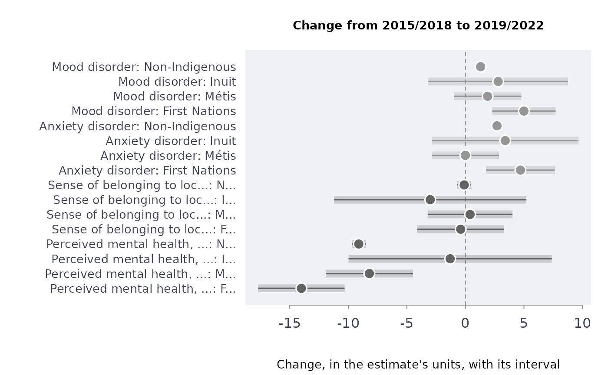

Healing as a process: change in published indicators between two periods
Source:R/indigenous_frameworks.R
healchg.RdFor each group and indicator, the change between two survey periods with its confidence interval, wellness indicators first: change over time read as Indigenous scholars describe mental health, as a process of healing, not as a fixed deficit.
Usage
healchg(
data,
grp,
ind,
prd,
est,
lower,
upper,
from,
to,
well = NULL,
qual = NULL,
conflvl = 0.95,
distress = NULL
)Arguments
- data
A data frame, one row per group, indicator and period.
- grp, ind, prd, est, lower, upper
Column names: the change is in the estimate's own units (percentage points for percentages).
- from, to
The two periods.
- well, distress
Optional indicators of wellness (listed first) and of distress; with
distressgiven, any other indicator is marked"other".- qual
Optional column of quality flags.
- conflvl
Confidence level (default 0.95).
Value
A data frame of class rmbl_healing_change: group,
indicator, side, from, to, change, lower,
upper, usewithcau.
Details
Stewart (2008) describes Indigenous mental health as wellness and as a process of healing; a process is seen in change. The change \(p_2 - p_1\) has the interval \(p_2 - p_1 \pm z\sqrt{s_1^2 + s_2^2}\), with the standard errors from the published intervals and the two periods' samples independent (separate cycles of a survey are). A change is only as comparable as the two periods' questions and designs: Statistics Canada flags breaks in a series, and a change across one is not a change in the people.
Acknowledgement
This estimator puts to quantitative use the framework of Professor Suzanne Stewart
(Yellowknives Dene First Nation, University of Toronto); see the acknowledgements of
vignette("first-nations-metis-inuit-health").
References
Stewart SL (2008), see holbal.
Examples
# 2015/2018 to 2019/2022, adults (table 13-10-0924-01)
h <- indiex("health")
belong <- "Sense of belonging to local community, somewhat strong or very strong"
h <- h[h$age == "Total, 18 years and over" & h$indicator %in%
c("Perceived mental health, very good or excellent", belong,
"Mood disorder", "Anxiety disorder"), ]
hc <- healchg(h, "group", "indicator", "period", "estimate", "lower", "upper",
from = "2015/2018", to = "2019/2022", qual = "quality",
well = c("Perceived mental health, very good or excellent",
belong))
hc
#> group
#> 1 First Nations
#> 2 Métis
#> 3 Inuit
#> 4 Non-Indigenous
#> 5 First Nations
#> 6 Métis
#> 7 Inuit
#> 8 Non-Indigenous
#> 9 First Nations
#> 10 Métis
#> 11 Inuit
#> 12 Non-Indigenous
#> 13 First Nations
#> 14 Métis
#> 15 Inuit
#> 16 Non-Indigenous
#> indicator
#> 1 Perceived mental health, very good or excellent
#> 2 Perceived mental health, very good or excellent
#> 3 Perceived mental health, very good or excellent
#> 4 Perceived mental health, very good or excellent
#> 5 Sense of belonging to local community, somewhat strong or very strong
#> 6 Sense of belonging to local community, somewhat strong or very strong
#> 7 Sense of belonging to local community, somewhat strong or very strong
#> 8 Sense of belonging to local community, somewhat strong or very strong
#> 9 Anxiety disorder
#> 10 Anxiety disorder
#> 11 Anxiety disorder
#> 12 Anxiety disorder
#> 13 Mood disorder
#> 14 Mood disorder
#> 15 Mood disorder
#> 16 Mood disorder
#> side from to change lower upper usewithcau
#> 1 wellness 59.8 45.8 -14.0 -17.6878178 -10.3121822 FALSE
#> 2 wellness 61.0 52.8 -8.2 -11.9259227 -4.4740773 FALSE
#> 3 wellness 49.1 47.8 -1.3 -9.9742435 7.3742435 FALSE
#> 4 wellness 70.6 61.5 -9.1 -9.7020797 -8.4979203 FALSE
#> 5 wellness 64.1 63.7 -0.4 -4.1165172 3.3165172 FALSE
#> 6 wellness 64.7 65.1 0.4 -3.2235342 4.0235342 FALSE
#> 7 wellness 76.5 73.5 -3.0 -11.2100548 5.2100548 FALSE
#> 8 wellness 67.5 67.4 -0.1 -0.7020797 0.5020797 FALSE
#> 9 distress 17.8 22.5 4.7 1.7635906 7.6364094 FALSE
#> 10 distress 18.6 18.6 0.0 -2.8657460 2.8657460 FALSE
#> 11 distress 12.3 15.7 3.4 -2.8587938 9.6587938 FALSE
#> 12 distress 8.2 10.9 2.7 2.3798438 3.0201562 FALSE
#> 13 distress 15.3 20.3 5.0 2.2981488 7.7018512 FALSE
#> 14 distress 16.8 18.7 1.9 -0.9744565 4.7744565 FALSE
#> 15 distress 11.0 13.8 2.8 -3.1640590 8.7640590 FALSE
#> 16 distress 8.5 9.8 1.3 0.9798438 1.6201562 FALSE
plot(hc)
